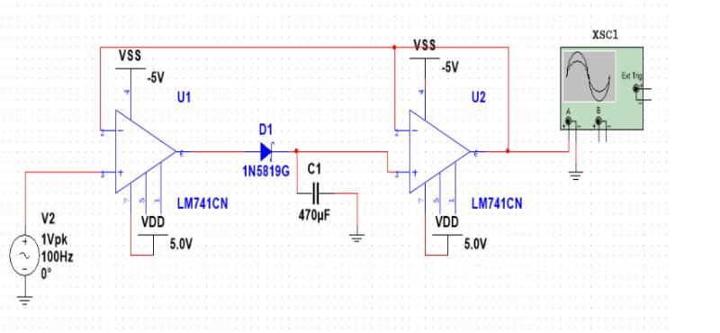
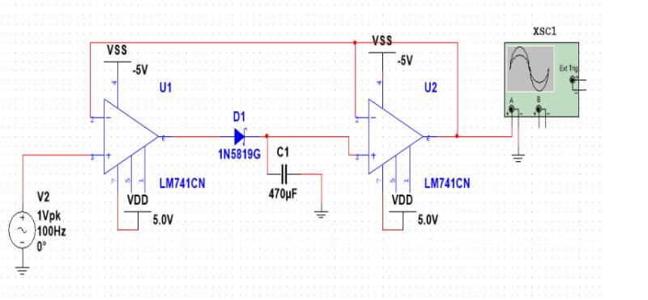

Hi, I'm Saif Elsaady
Data Scientist & Electrical Engineer
Specializing in AI/ML, Hardware Development, and Software Engineering. Passionate about creating innovative solutions that bridge the gap between hardware and software technologies.

Loading Portfolio...
Specializing in AI/ML, Hardware Development, and Software Engineering. Passionate about creating innovative solutions that bridge the gap between hardware and software technologies.
Dual Master's student in Electrical Engineering (AI/ML) and Data Science 4+1 with a 4.0 GPA across all degrees. Over fifty-six (56) hands-on projects spanning machine learning, automation, hardware design, and software engineering. Passionate about building intelligent, reliable systems at the intersection of ML, hardware, and software.
My experience spans from semiconductor design, hardware integration to machine learning algorithms and software development. I'm passionate about sustainable technology and creating solutions that make a positive impact.
Years Experience
Projects Completed
Technologies
Engineered advanced dual CNN architecture for automated hardware failure detection using specialized models for continuous and discrete sensor data.
Achieved 88.89% accuracy in life-critical submarine mine detection using PCA-optimized Multi-Layer Perceptron neural networks.
Developed a mobile PCB with I2C/SPI sensors, power-efficient architecture, and field-tested calibration for environmental monitoring.
Modeled IMU data using Kalman filtering, assisted with sensor fusion algorithms, and validated performance through real-world UAV testing.


Designed power and ESC connection systems using a custom PCB, configured Veronte Autopilot, and optimized layout for signal integrity.

Developed a mobile PCB with I2C/SPI sensors, power-efficient architecture, and field-tested calibration for environmental monitoring.


Built a BLE-powered wearable on CY8CKIT-142 with low-power C++ firmware and user safety compliance.

Created an op-amp based audio system using ISD1700, including playback, erase, and amplification logic.
Automated servo motion and sensor feedback with Arduino firmware and Serial Monitor controls.

Built a PCB + I2C sensor system with LED debugging and oscilloscope testing workflows.


Simulated diode-op-amp peak detectors for real-time signal measurement and testing instrumentation.
 

Designed a switch-activated DC motorized assistive device with torque optimization and <$40 BOM.

Designed and simulated a 5V, 30W isolated power supply using a high-frequency flyback topology and MATLAB-based modeling.
Designed a breakout board with op-amp-based analog filtering and embedded C++ firmware for dynamic audio monitoring.
Redesigned and optimized an electric skateboard through reverse engineering and performance benchmarking.
Built a servo-powered garage door prototype with bidirectional control and basic electrical circuitry.
Simulated 6-bit logic gate operations in Verilog to validate binary arithmetic and hardware design.
$monitor to track logic behavior in real time.
Designed and built a rubber band-powered projectile launcher, optimizing elastic energy conversion for maximum efficiency.

Redesigned and optimized a consumer stand fan for airflow, noise reduction, and assembly improvements.
Used Xendee to simulate peak load, islanding, and voltage regulation in a hybrid solar/wind/diesel grid in Oahu.
Simulated a resilient hybrid power grid for Oahu, Hawaii, integrating solar, wind, and diesel assets under both connected and islanded modes.
Simulated attack vectors on onboard chargers using Arduino + MATLAB for both hardware and protocol testing.

Built Python-based flight optimization model for Honeywell Hackathon with 3D visualization and live path correction logic.
Built time-series models (XGBoost, SVR, ANN) and applied PCA + t-SNE for forecasting optimization.
Applied ML and statistical regression to predict reorder behavior across departments and product types.
Used NLP and K-Means to segment call transcripts, visualize friction, and improve service design.
Used clustering, logistic regression, and geospatial features to predict crime severity and classify weapon usage.
üìê Simulated Newton's Cooling Law, baton physics, and Lotka-Volterra equations for dynamics & biology models.
Developed a simple object-oriented betting simulator using classes, input validation, and game logic.
Conducted hypothesis testing on calorimetry data, comparing reported and experimental means.
Applied normal distribution modeling to Premier League match data, testing fairness of reported stats.
Used regression to correlate energy burden to income tiers and analyze utility cost equity from RECS data.
Modeled grocery order behavior using regression, classification, and probability distribution.
Developed Shiny R app for real-time hypothesis testing with CI visualization.
Designed and launched Shopify site to support digital sales and enhance UX.
Built live-streaming camera pipeline for UAV using Linux, FFmpeg, and OpenCV.
Visualized product sales and inventory patterns using R data visualization libraries.
Explored RF detection trends in data center rooms using Python stats methods.
Engineered advanced dual CNN architecture for automated hardware failure detection using specialized models for continuous and discrete sensor data.
Engineered comparative BPSK demodulation system using dual methodologies (classical DSP vs. neural networks).
Engineered advanced semiconductor device simulation platform integrating fundamental physics equations with numerical optimization.
Achieved 88.89% accuracy in life-critical submarine mine detection using PCA-optimized Multi-Layer Perceptron neural networks.
Engineered advanced HSPICE-driven circuit optimization platform automating parametric sweeps across fan factors and chain lengths.
Achieved 94.44% diagnostic accuracy in heart disease prediction using Support Vector Machine with RBF kernel.
Led enterprise process transformation initiative reducing AI model deployment time by 75% through systematic IDEF0 modeling.
Engineered enterprise-grade desktop application featuring dynamic plugin architecture with importlib-based module loading.
Modeled endangered populations using Leslie matrices and simulated conservation strategy outcomes.
Performed ANOVA and regression on urban vs. rural species diversity using CAP LTER data.
Used microscopy and FEA to study grain boundaries, voiding, and delamination in thin-film semiconductors.
Explored ethics of solar innovation, data transparency, and conflicts of interest in green tech.
Designed a water pitcher with plastic-eating enzyme membrane and validated filtration performance.
Modeled biodiversity and access in Tempe, AZ using GeoPandas and open street map data.